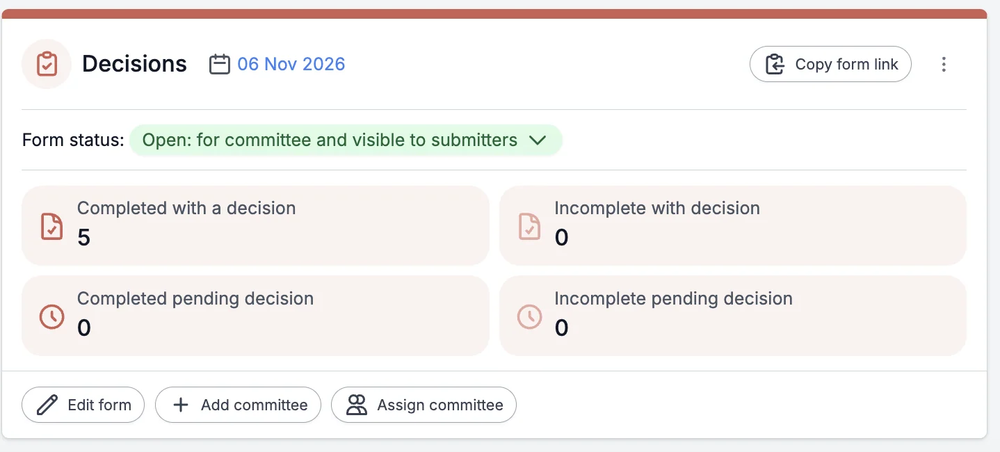
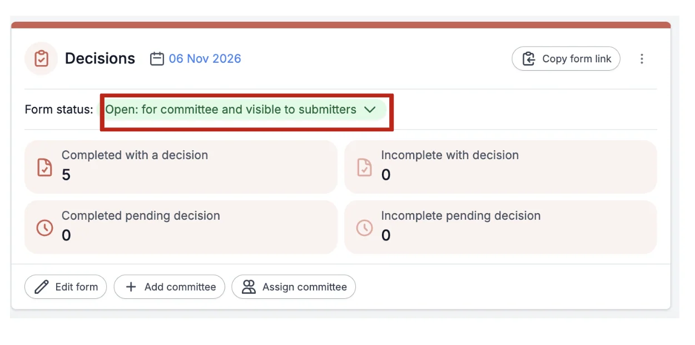
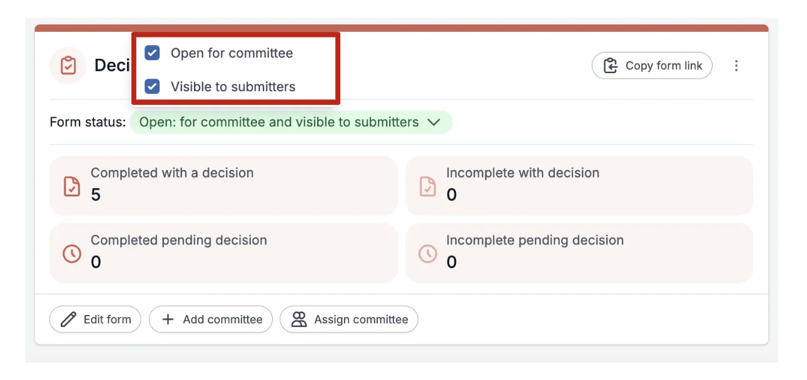
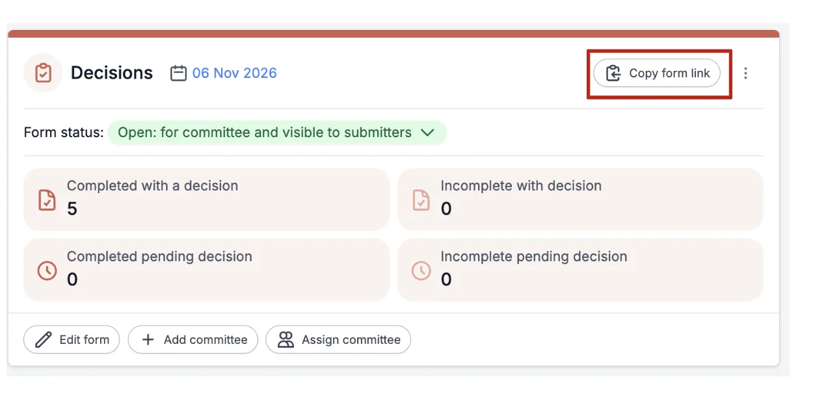

Opening and closing decision making
For event organisersNot an organiser?
In order to make the decision system live, you will need to open decisions.#
Please note: The form only needs to be open if Committee Members are working on the form.
To assign Committee members, go to Manage users
Go to the Event dashboard.
Scroll down and you will see the Decisions panel on the screen.

To allow committee members to make decisions, go to the Form Status on the Decision Panel and click the drop-down button next to it.

From the drop-down menu, you'll need to tick the box that says "Open for Committee".
If you wish for the decisions to be visible to submitters, then tick this box too.
To close (stop) the decision-making from committee members, untick the "Open for Committee" box, and they will no longer be able to make decisions.

When you are ready to start making decisions on submissions, click on the Copy Form Link button at the top right of the decision panel. This will copy the link for you to send to your committee members so they can access their decisions, etc.

You will need to notify submitters via email of their decisions. Although they will see the decision when they log in to their personal dashboards, they won't automatically receive notification. See Amending email templates.

Common questions#
What do I need to do to ensure committee members can make decisions?#
You can choose the questions that committee members can amend the responses to. See Design the decision form.

Didn't solve it? Ask our support team
No question is too small, and there's no charge for asking. Raise a ticket and someone who knows the software will pick it up.
Did this page solve it?
Thanks — this helps us fix it.